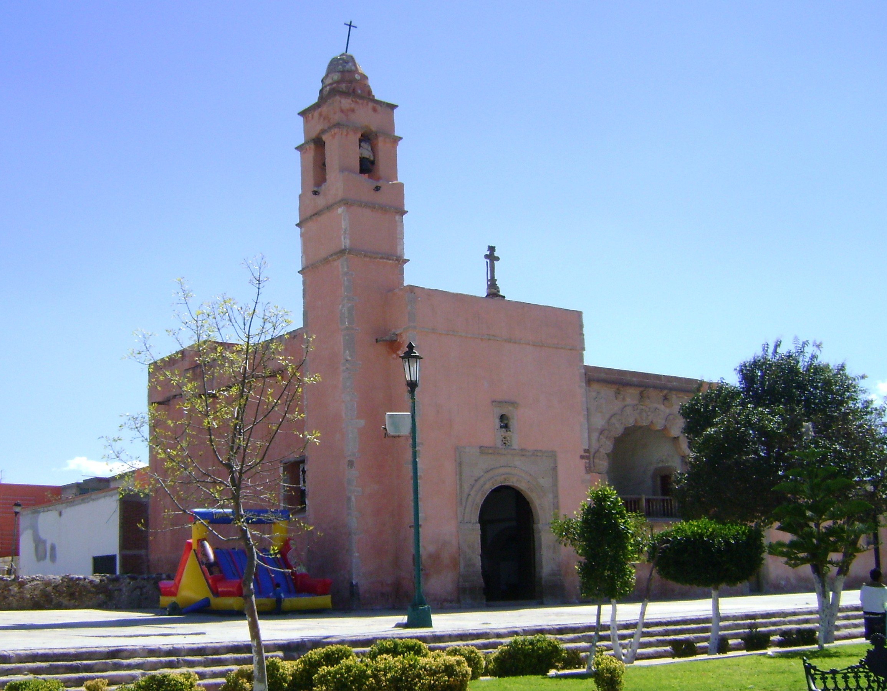

Mi nombre es Dana Fernanda Castro Olguín vengo de Tlahguelilpan Hidalgo, estudio en el Instituto Tecnologico Superior del Estado de Hidalgo en la carrera de Ingenieria de la Tecnologias de la información y comunicaciones.
Uno de mis hobbies es leer novelas de romance otro de mis hobbies es dormir tambien me gusta ver series(me las termino en menos de una semana cuando son de 20 a mas capitulos, sí son menos en dos días una temporada) como me gustan las series me gusta ver peliculas mi hobbie favorito es estar con mi novio Me gusta tocar Guitarra (aunque no se mucho) tambien me gusta comer y ver tiktoks tambien me gusta escuchar musica y cantarla y bailarla o estar con mi hermana de cualquier forma incluso peliando pero tambien me gusta cocinar y hacer postres

El municipio de Tlahuelilpan es uno de los ochenta y cuatro municipios que conforman el estado de Hidalgo, en México. La cabecera municipal y localidad más poblada es Tlahuelilpan.
El Instituto Tecnológico Superior del Occidente del Estado de Hidalgo, es una institución pública de educación superior, ubicada en el municipio de Mixquiahuala de Juárez, en el Estado de Hidalgo, México.